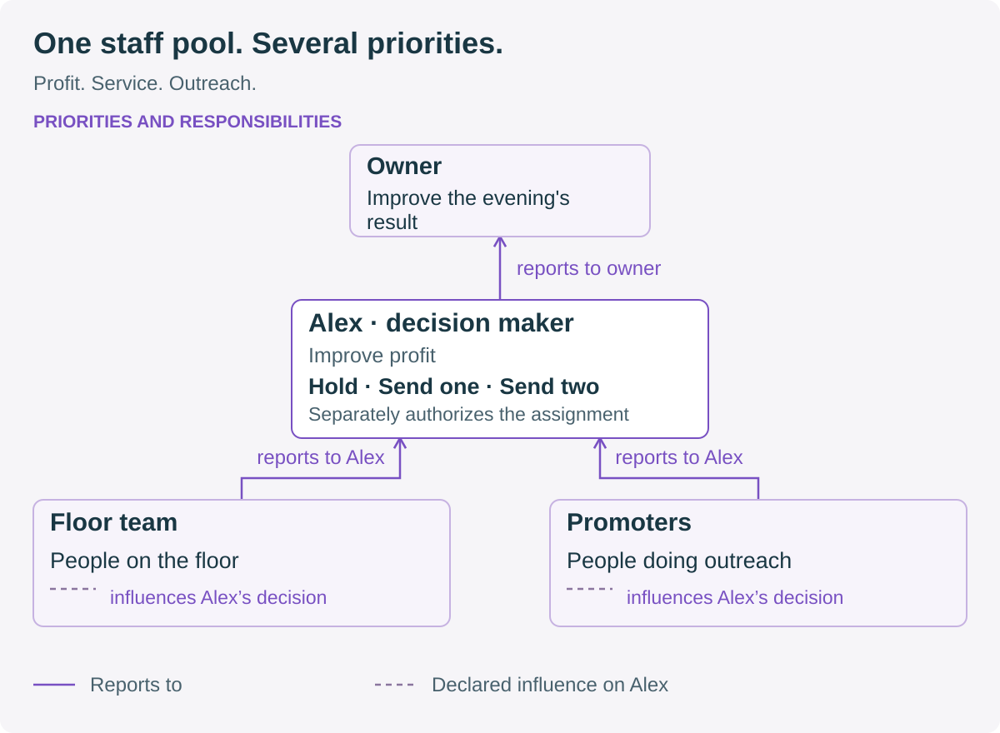
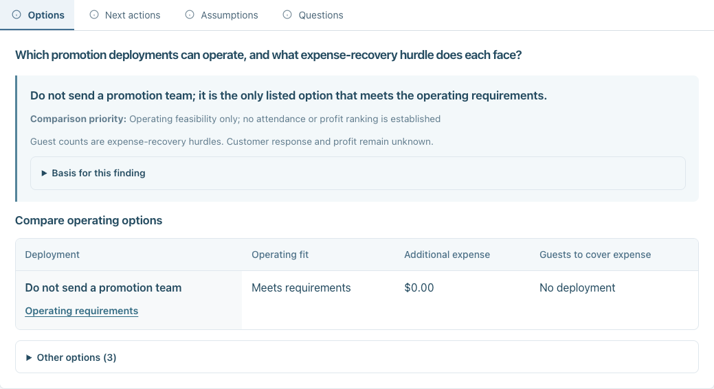

It is 7:30 p.m. Alex manages a fictional gentlemen's club. A nearby event will finish soon and the room is quiet. He can commit up to $400 of additional promotion spending, but people assigned to outreach are unavailable to serve customers inside.
Two callouts leave five qualified staff available from a seven-person roster. At least four must remain inside throughout the proposed 7:45–9 p.m. absence. The owner wants more profitable business; the floor needs coverage; promoters want a useful assignment and fair credit. Alex needs a complete operating choice.
Compare the whole deployment.
The four supplied alternatives are holding, one-person standard outreach and two two-person offers. Their complete charges include the extra labor, transport, materials and commissions caused by the assignment. The two-person alternatives leave only three staff inside and fail the minimum.
Holding and the $200 one-person standard deployment meet the recorded operating requirements. At $40 retained contribution per genuinely additional guest, five guests cover the $200 expense and six first exceed it. That is a performance hurdle, not a prediction that five or six guests will arrive.


A third callout changes what can operate.
Alex is considering the one-person deployment when another employee calls out before departure. Change unavailable staff from two to three, leaving four available. Keep the floor minimum, assignment, quote, access and timing fixed; then recalculate.
Five staff available.
Holding and one-person outreach meet the operating requirements.

Four staff available.
Only holding meets the requirements. Sending one leaves three inside.


The $200 quote and five-guest hurdle have not changed. The deployment is now unusable because its staffing condition fails. A hypothetical attractive response cannot compensate for insufficient coverage. Alex keeps the team inside rather than treating the earlier result as current.
This staff-allocation problem uses the Make a Bounded Commitment decision pattern. Its Commitment Assessment checks the complete deployment’s staffing, timing, access and spending conditions together. When a supporting fact changes, reassess that same arrangement before committing people or money.
The operating answer leaves the spending question open.
Before the third callout, Alex could put forward the bounded $200 deployment and seek its specific authorization. Afterward, the recorded staffing no longer supports departure. The calculation does not dispatch staff, authorize spending or establish any completed promotion.
Neither result establishes whether the promotion attracts enough genuinely additional business. The supporting learning brief names that unanswered question without claiming an implemented experiment. For a working comparison of buying timely information with choosing now, see the growth payment-preference example.
Open the example or download its worked inputs from the collection guide. The assessment establishes the finding, configuration selects its presentation and the shared interface renders it.